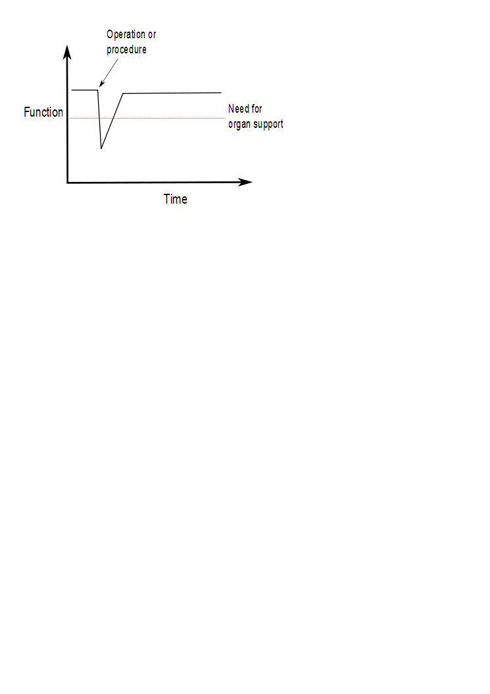

Iain Crossingham
Consultant Physician & Intensivist
We have no machine to do the job of the liver and we need at least some heart and some lung to work with.
Exception: DKA - this needs insulin not critical care

Exception: Gram negative sepsis from a urinary or biliary source might get away with isolated vasopressors.
Slides available at http://iainxingham.github.io/Presentations/